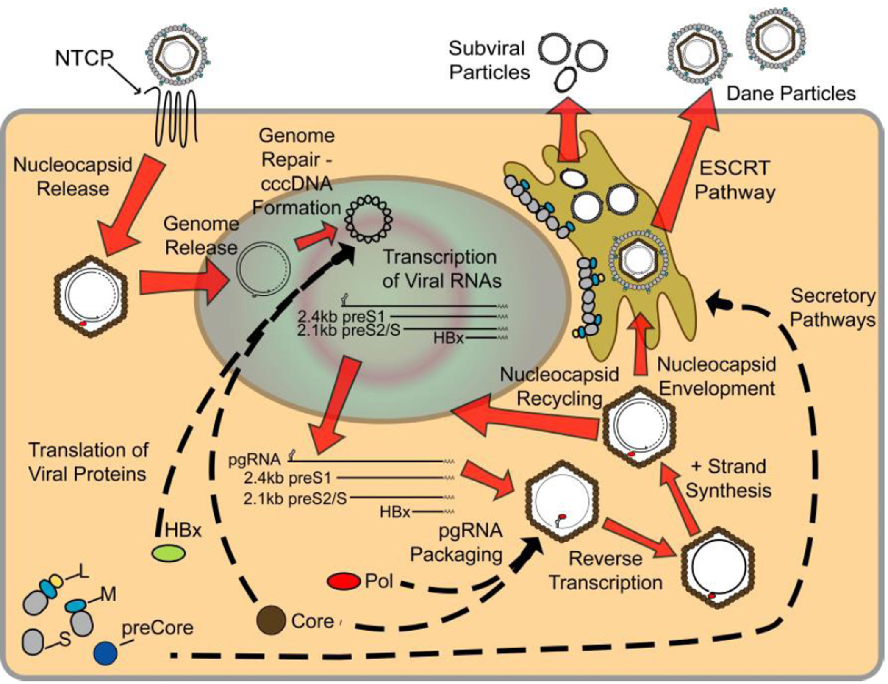

SINH LÝ BỆNH & CƠ CHẾ BỆNH SINH VIÊM GAN SIÊU VI B
Hepatitis B Virus (HBV) Pathophysiology & Pathogenesis — Phân tích phân tử cấu trúc bộ gen rcDNA, con đường sửa chữa tạo cccDNA minichromosome, bản chất miễn dịch không gây độc tế bào trực tiếp, cơ chế cạn kiệt tế bào T, 4 pha diễn tiến tự nhiên theo EASL 2025 & Bộ Y tế 2026, và cơ chế sinh ung thư gan HCC do oncoprotein HBx / tích hợp DNA.
Viêm gan siêu vi B (Hepatitis B Virus - HBV) là bệnh lý nhiễm trùng gan mạn tính nghiêm trọng hàng đầu toàn cầu. HBV là một virus không trực tiếp gây độc tế bào gan (non-cytopathic); toàn bộ tổn thương hoại tử nhu mô, xơ hóa và xơ gan đều là hệ quả của phản ứng miễn dịch tế bào của vật chủ. Sự tồn tại bền vững của cccDNA minichromosome trong nhân tế bào gan là rào cản sinh học lớn nhất đối với việc chữa khỏi hoàn toàn bệnh lý này.
Phần I: Cấu Trúc Vi Rút và Bản Đồ Bộ Gen HBV (Genomics & Structure)
Vi rút viêm gan B (HBV) thuộc họ Hepadnaviridae. Bộ gen của HBV cực kỳ nhỏ gọn và hiệu quả cao, bao gồm một phân tử DNA vòng, lỏng lẻo, bán kép (relaxed circular DNA - rcDNA) dài khoảng 3.2 kb. rcDNA được liên kết cộng hóa trị ở đầu 5' của chuỗi âm (-) với protein Polymerase của chính vi rút.
1. Bốn Khung Đọc Mở Gối Chồng Nhau (Overlapping ORFs)
Bộ gen HBV được phiên mã và dịch mã tối ưu hóa nhờ 4 khung đọc mở gối chồng lên nhau hoàn toàn:
Sản phẩm: Mã hóa cho HBeAg (protein precore hòa tan được bài tiết vào tuần hoàn, đóng vai trò dung nạp miễn dịch) và HBcAg (protein core 21 kDa tự lắp ráp thành vỏ capsid hình cầu đối xứng icosahedral chứa bộ gen).
Sản phẩm: Khung đọc lớn nhất, mã hóa enzyme Polymerase đa chức năng gồm 3 miền hoạt tính: Terminal Protein (TP) làm mồi protein tổng hợp DNA, Reverse Transcriptase (RT) sao chép ngược RNA thành DNA, và RNase H phân giải mạch khuôn pgRNA.
Sản phẩm: Mã hóa 3 kháng nguyên bề mặt tích hợp trên màng bọc lipid: Large (L-HBsAg) chứa miền preS1 nhận diện thụ thể tế bào gan, Middle (M-HBsAg) và Small (S-HBsAg) là thành phần protein vỏ phong phú nhất.
Sản phẩm: Mã hóa cho protein HBx (17 kDa), một nhân tố điều hòa phiên mã phi cấu trúc đa năng, tối cần thiết cho sự duy trì phiên mã cccDNA và đóng vai trò trung tâm kích hoạt sinh ung thư tế bào gan (HCC).
2. Ba Loại Tiểu Thể HBV Trong Tuần Hoàn & Cơ Chế "Mồi Nhử Miễn Dịch" (Immune Decoy)
Tế bào gan nhiễm HBV sản sinh và bài tiết vào máu 3 loại tiểu thể vi rút có hình thái và chức năng khác nhau:
| Loại Tiểu Thể | Kích thước & Cấu trúc | Vật chất Di truyền & Tính Lây Nhiễm | Vai trò Sinh học & Miễn dịch |
|---|---|---|---|
| Hạt Dane (Dane Particles) | Hình cầu 42 nm hoàn chỉnh, có màng bọc lipid chứa L/M/S-HBsAg và nucleocapsid lõi HBcAg. | Chứa rcDNA 3.2 kb & Polymerase. Có tính lây nhiễm |
Virion hoàn chỉnh xâm nhập tế bào gan đích qua thụ thể NTCP để nhân lên và truyền bệnh. |
| Tiểu thể phụ hình cầu (Spherical SVPs) | Hạt hình cầu đường kính 25 nm, chỉ gồm lớp lipid kép chứa S-HBsAg và lượng nhỏ M-HBsAg. | Rỗng (Không có lõi, không có DNA). Không lây nhiễm |
"Mồi nhử miễn dịch" (Immune Decoy): Được bài tiết với nồng độ khổng lồ gấp 10.000 đến 100.000 lần hạt Dane. Nồng độ HBsAg cực cao này hấp phụ và bão hòa toàn bộ kháng thể anti-HBs lưu hành, làm cạn kiệt tế bào B/T đặc hiệu, che chắn bảo vệ cho hạt Dane xâm nhập tế bào gan an toàn. |
| Tiểu thể phụ hình ống (Filamentous SVPs) | Các chuỗi sợi hình ống đường kính 22 nm, chiều dài biến thiên, giàu S-HBsAg và L-HBsAg. | Rỗng (Không có lõi, không có DNA). Không lây nhiễm |
Phần II: Chu Kỳ Nhân Lên của HBV & Con Đường Sửa Chữa Tạo cccDNA
Vòng đời sinh học của HBV là một chuỗi biến đổi phân tử tinh vi kết hợp giữa cơ chế phiên mã ngược và hệ thống sửa chữa DNA của tế bào chủ.
1. Quá Trình Xâm Nhập & Vận Chuyển Vào Nhân Tế Bào (Entry & Nuclear Import)
- Gắn kết ban đầu: Hạt Dane bám lỏng lẻo vào Heparan Sulfate Proteoglycans (HSPG) trên bề mặt tế bào gan.
- Nhận diện thụ thể đặc hiệu: Miền preS1 của protein L-HBsAg liên kết có ái lực cực cao với thụ thể đặc hiệu tế bào gan NTCP (Sodium-taurocholate cotransporting polypeptide), với sự hỗ trợ của đồng thụ thể EGFR kích hoạt quá trình nội thực bào qua bọc clathrin.
- Cởi vỏ & Tháo xoắn: Màng bọc lipid hợp nhất với màng endosome giải phóng nucleocapsid vào bào tương. Nucleocapsid di chuyển dọc vi ống đến lỗ màng nhân (nuclear pore complex). Nhờ sự phosphoryl hóa miền C-terminal (CTD) của core protein, nucleocapsid rã ra và giải phóng rcDNA vào trong nhân tế bào gan.
2. Con Đường Sửa Chữa 7 Bước Tạo cccDNA Minichromosome
Quá trình chuyển đổi rcDNA bán kép thành DNA vòng khép kín cộng hóa trị (cccDNA) hoàn toàn do các enzyme nội sinh của tế bào gan thực hiện:
Sau khi đóng vòng khép kín, phân tử cccDNA trần lập tức liên kết với các protein histone (H3, H4) của tế bào chủ cùng với protein HBc và HBx để tạo thành một nhiễm sắc thể thu nhỏ (minichromosome) siêu bền vững nằm trong nhân tế bào gan. cccDNA không bị phân hủy bởi các thuốc NUCs (Entecavir, Tenofovir) và đóng vai trò như một "nhà máy khuôn mẫu" vĩnh cửu tiếp tục tái sinh vi rút ngay khi ngừng thuốc kháng virus.

3. Hiện Tượng Tích Hợp HBV DNA Vào Bộ Gen Người (HBV Integration)
Trong quá trình phiên mã ngược, khoảng 10% trường hợp xảy ra lỗi tổng hợp tạo ra DNA sợi thẳng kép (dsLDNA) thay vì rcDNA. dsLDNA này xâm nhập vào nhân và chèn tích hợp vĩnh viễn vào bộ gen tế bào gan tại các vị trí đứt gãy DNA ngẫu nhiên.
Mặc dù DNA tích hợp bị mất promoter lõi (không thể tạo pgRNA để nhân lên thành virion hoàn chỉnh), nó vẫn bảo tồn nguyên vẹn khung đọc mở PreS/S và đóng vai trò như nguồn sản xuất liên tục một lượng khổng lồ HBsAg giải phóng vào máu. Đây là lời giải thích sinh lý bệnh cho hiện tượng nhiều bệnh nhân giai đoạn HBeAg âm tính dù tải lượng HBV DNA huyết thanh rất thấp nhưng nồng độ HBsAg vẫn duy trì ở mức rất cao.
Phần III: Cơ Chế Tổn Thương Tế Bào Gan & Miễn Dịch Bệnh Học (Immunopathology)
Bản chất Không Gây Độc Tế Bào (Non-cytopathic Nature): HBV không trực tiếp phá hủy tế bào gan chủ. Bằng chứng là trong pha Dung nạp miễn dịch ở trẻ em, tế bào gan chứa hàng tỷ bản sao vi rút nhưng cấu trúc mô học gan hoàn toàn bình thường và men gan ALT không tăng. Viêm gan hoại tử hoàn toàn do phản ứng miễn dịch của cơ thể gây ra.
Cơ chế: Tế bào CD8+ T (CTLs) đặc hiệu nhận diện kháng nguyên vi rút (HBcAg, HBsAg) trình diện qua MHC lớp I trên màng tế bào gan. CD8+ T tiêu diệt trực tiếp tế bào gan nhiễm thông qua phóng thích Perforin / Granzyme B và kích hoạt thụ thể tử vong Fas / FasL.
Hậu quả: Hoại tử tế bào gan hàng loạt, giải phóng enzyme nội bào (AST, ALT) vào máu, gây viêm gan cấp hoặc các đợt bùng phát viêm gan mạn tính.
Cơ chế: Các tế bào T hoạt hóa giải phóng các cytokine kháng virus mạnh là IFN-γ và TNF-α. Các cytokine này kích hoạt con đường tín hiệu tế bào gan thúc đẩy sự biểu hiện của các enzyme Deaminase APOBEC3A và APOBEC3B.
Hậu quả: APOBEC3A/3B di chuyển vào nhân, khử amin cytosine trên cccDNA, kích hoạt sự thoái hóa có mục tiêu cccDNA minichromosome mà không làm tổn thương hay phá hủy tế bào gan. Đây là cơ chế thanh thải vi rút lý tưởng của hệ miễn dịch tự nhiên.
3. Cơ Chế Cạn Kiệt Tế Bào T (T-Cell Exhaustion) Trong Nhiễm Mạn Tính
Trong nhiễm HBV mạn tính, sự tiếp xúc kéo dài hàng chục năm với nồng độ kháng nguyên vi rút cực cao (HBsAg, HBeAg) dẫn đến trạng thái suy kiệt tế bào T (T-cell exhaustion):
- Biểu hiện thụ thể ức chế (Checkpoints): Màng tế bào T đặc hiệu tăng biểu hiện các phân tử ức chế miễn dịch PD-1, CTLA-4, TIM-3, LAG-3 làm tê liệt khả năng tăng sinh và tiết cytokine của tế bào T.
- Tác động dung nạp miễn dịch của HBeAg hòa tan: HBeAg được tiết ồ ạt vào máu, vượt qua hàng rào tuần hoàn đến tuyến ức, gây dung nạp âm tính đối với các dòng tế bào T nhận diện kháng nguyên lõi HBc/HBe ngay từ giai đoạn chu sinh.
Phần IV: Diễn Tiến Tự Nhiên & 4 Pha Nhiễm HBV Mạn Tính
Theo hướng dẫn của Hiệp hội Nghiên cứu Bệnh Gan Châu Âu (EASL 2025) và Quyết định 1740/QĐ-BYT năm 2026 của Bộ Y tế Việt Nam, diễn tiến tự nhiên của nhiễm HBV mạn tính được chuẩn hóa thành 4 pha lâm sàng động học:
| Chỉ số Đánh giá | Pha 1: Nhiễm HBV mạn HBeAg (+) (Dung nạp miễn dịch) |
Pha 2: Viêm gan B mạn HBeAg (+) (Thải trừ miễn dịch) |
Pha 3: Nhiễm HBV mạn HBeAg (-) (Người mang không hoạt động) |
Pha 4: Viêm gan B mạn HBeAg (-) (Tái hoạt động đột biến) |
|---|---|---|---|---|
| Phân nhóm | Pha 1: Dung nạp | Pha 2: Thải trừ | Pha 3: Không hoạt động | Pha 4: Tái hoạt |
| HBeAg / Anti-HBe | HBeAg (+) / Anti-HBe (-) | HBeAg (+) / Anti-HBe (-) | HBeAg (-) / Anti-HBe (+) | HBeAg (-) / Anti-HBe (±) |
| Tải lượng HBV DNA | Rất cao (> 107 IU/mL) | Cao (104 - 107 IU/mL) | Thấp (< 2.000 IU/mL) hoặc không phát hiện | Dao động (> 2.000 IU/mL) |
| Men gan ALT | Liên tục bình thường | Tăng cao hoặc dao động | Liên tục bình thường | Tăng cao hoặc dao động |
| Mô học Gan (Sinh thiết / FibroScan) | Không viêm, không xơ hóa (F0 - F1) | Viêm hoại tử & Xơ hóa tiến triển (≥ F2) | Viêm tối thiểu, xơ hóa ổn định | Viêm hoại tử nặng, xơ hóa tiến triển nhanh (≥ F2) |
| Bản chất Cơ chế | Hệ miễn dịch chưa tấn công vi rút; tải lượng vi rút tối đa nhưng tế bào gan nguyên vẹn. | Miễn dịch CD8+ T tấn công tế bào gan nhiễm; cố gắng thanh thải HBeAg gây hoại tử mô gan. | Kiểm soát miễn dịch thành công; cccDNA bị ức chế phiên mã, sao chép ngừng hoạt động. | Xuất hiện đột biến vùng Precore (G1896A) hoặc BCP (A1762T/G1764A) làm mất HBeAg nhưng virus vẫn nhân lên mạnh; tiến triển âm thầm xơ gan/HCC. |
Là tình trạng bệnh nhân có HBsAg âm tính nhưng vẫn phát hiện được HBV DNA nồng độ thấp trong huyết thanh (< 200 IU/mL) hoặc tồn lưu trong mô gan. Bản chất là cccDNA vẫn "ngủ yên" trong nhân tế bào gan. Khi bệnh nhân sử dụng các thuốc ức chế miễn dịch mạnh (Rituximab, kháng TNF, hóa trị ung thư, ghép tạng), cccDNA sẽ lập tức bùng phát nhân lên dữ dội gây viêm gan tối cấp đe dọa tử vong nếu không được dự phòng bằng thuốc NUCs từ trước.
Phần V: Cơ Chế Bệnh Sinh Tiến Triển Đến Xơ Gan & Ung Thư Gan (HCC)
1. Cơ Chế Sinh Xơ Hóa Gan & Tăng Áp Lực Cửa (Fibrogenesis)
Quá trình hoại tử tế bào gan liên tục trong Pha 2 và Pha 4 kích hoạt dòng thác phản ứng viêm sửa chữa mô:
Sự tích tụ chất nền ngoại bào (ECM) trong khoang Disse làm mất đi các lỗ sàng của tế bào nội mô xoang gan (hiện tượng mao mạch hóa xoang gan - capillarization of sinusoids), cản trở sự trao đổi chất giữa máu và tế bào gan, gây tăng kháng lực mạch máu xoang và hình thành hội chứng tăng áp lực tĩnh mạch cửa.
2. Ba Trục Cơ Chế Sinh Ung Thư Biểu Mô Tế Bào Gan (HBV-Associated HCC)
Khác với viêm gan C (thường chỉ sinh ung thư sau khi đã xơ gan), HBV có khả năng gây ung thư gan trực tiếp ngay cả trên nền gan chưa xơ hóa nhờ 3 cơ chế phối hợp:
Chu kỳ hoại tử - tái sinh kéo dài hàng thập kỷ tạo môi trường stress oxy hóa cao (sản sinh ROS), gây tổn thương DNA và làm tăng xác suất đột biến gen sinh ung ngẫu nhiên trong quá trình phân bào liên tục.
Đột biến chèn (Insertional mutagenesis) gây bất hoạt các gen đè nén khối u (p53) hoặc đặt promoter mạnh của virus trước các oncogene tế bào chủ (TERT, c-myc, CCNE1), gây mất ổn định bộ gen và nhân dòng vô tính ác tính.
- Phân hủy phức hợp ức chế Smc5/6: HBx chuyển hướng phức hợp ubiquitin ligase CUL4-DDB1 của tế bào chủ để phân hủy phức hợp Smc5/6 (vốn có nhiệm vụ khóa cccDNA), giải phóng cccDNA và phá hủy khả năng sửa chữa đứt gãy DNA kép của tế bào gan.
- Giữ chân tế bào ở ranh giới pha G1/S (Cell Cycle Stalling): HBx giữ tế bào gan ở pha G1/S nhằm ngăn tế bào bước vào pha S (vốn làm cạn kiệt dNTP cần cho sự nhân lên của vi rút), tạo ra sự mất ổn định nhiễm sắc thể nghiêm trọng.
- Kích hoạt các con đường sinh tồn tế bào ác tính: Kích hoạt liên tục các trục tín hiệu Ras/Raf/MAPK, PI3K/Akt, Wnt/β-catenin và NF-κB.
- Bất hoạt trực tiếp gen p53: Liên kết và ức chế p53, ngăn chặn tế bào gan mang đột biến tự đi vào chu trình chết theo chương trình (Apoptosis).
Phần VI: Diễn Giải Dấu Ấn Huyết Thanh & Clinical Pearls
1. Bảng Diễn Giải Ý Nghĩa Các Dấu Ấn Huyết Thanh HBV (Serological Markers)
| Dấu ấn Huyết thanh | Bản chất Sinh học | Ý nghĩa Lâm sàng & Sinh lý bệnh |
|---|---|---|
| HBsAg (Kháng nguyên bề mặt) | Protein vỏ S/M/L trên hạt Dane và tiểu thể subviral | Dấu ấn xác định đang nhiễm HBV (cấp hoặc mạn nếu tồn tại > 6 tháng). Là mục tiêu của "chữa khỏi chức năng" (Functional Cure). |
| Anti-HBs (Kháng thể bề mặt) | Kháng thể trung hòa đặc hiệu chống HBsAg | Thể hiện miễn dịch bảo vệ sau khi khỏi bệnh tự nhiên (kèm Anti-HBc IgG) hoặc sau tiêm vaccine (Anti-HBc âm tính). Nồng độ ≥ 10 mIU/mL là đạt hiệu quả bảo vệ. |
| HBeAg (Kháng nguyên e) | Protein precore hòa tan bài tiết | Dấu ấn của sự nhân lên tích cực của virus và tính lây truyền cao. |
| Anti-HBe (Kháng thể e) | Kháng thể chống lại HBeAg | Thể hiện chuyển đổi huyết thanh HBeAg; virus bước vào pha kiểm soát sao chép (trừ khi có đột biến Precore/BCP ở Pha 4). |
| Anti-HBc IgM | Kháng thể IgM chống protein capsid | Dấu ấn của nhiễm HBV cấp tính hoặc đợt bùng phát cấp nặng trên nền viêm gan B mạn tính. |
| Anti-HBc IgG / Total | Kháng thể IgG chống protein capsid | Dấu ấn xác định đã từng tiếp xúc với HBV trong đời; tồn tại suốt đời kể cả khi đã khỏi bệnh. |
| HBV DNA (Định lượng PCR) | Vật chất di truyền của virion lưu hành | Phản ánh trực tiếp tốc độ nhân lên của virus trong tế bào gan; chỉ số quyết định điều trị và theo dõi đáp ứng thuốc NUCs. |
- Mục tiêu điều trị hiện nay (Functional Cure): Do thuốc ức chế men sao chép ngược (NUCs: Tenofovir TAF/TDF, Entecavir) chỉ ức chế phiên mã ngược pgRNA thành rcDNA mà không tiêu diệt được cccDNA và DNA tích hợp, mục tiêu điều trị tối ưu hiện nay là "Chữa khỏi chức năng" (HBsAg mất vĩnh viễn ± xuất hiện Anti-HBs, HBV DNA dưới ngưỡng phát hiện).
- Cảnh giác với Pha 4 (HBeAg âm tính nhưng ALT tăng): Sự biến mất của HBeAg không đồng nghĩa với khỏi bệnh. Cần luôn định lượng HBV DNA để phát hiện đột biến vùng Precore/BCP (Pha 4) đang âm thầm hủy hoại gan dẫn đến xơ gan nhanh chóng.
- Sàng lọc Ung thư Gan HCC định kỳ: Bệnh nhân viêm gan B mạn có chỉ định siêu âm bụng và xét nghiệm AFP/AFP-L3/PIVKA-II định kỳ mỗi 6 tháng, ngay cả khi tải lượng HBV DNA đã bị ức chế hoàn toàn dưới ngưỡng phát hiện nhờ thuốc NUCs, do nguy cơ từ DNA tích hợp và protein HBx vẫn tồn tại.
📚 Tài liệu Tham khảo Chính (AMA Format)
- 1. Lamontagne RJ, Bagga S, Bouchard MJ. Hepatitis B virus molecular biology and pathogenesis. Hepatoma Res. 2016;2:163-186. doi:10.20517/2394-5079.2016.05.
- 2. Xia Y, Guo H. Hepatitis B Virus cccDNA: Formation, Regulation and Therapeutic Potential. Antiviral Res. 2020;180:104824. doi:10.1016/j.antiviral.2020.104824.
- 3. European Association for the Study of the Liver (EASL). EASL 2025 Clinical Practice Guidelines on the management of chronic hepatitis B virus infection. J Hepatol. 2025;82(5).
- 4. Bộ Y tế Việt Nam. Hướng dẫn chẩn đoán, điều trị viêm gan vi rút B (Ban hành kèm theo Quyết định số 1740/QĐ-BYT ngày 16/06/2026 của Bộ trưởng Bộ Y tế). Hà Nội: Bộ Y tế; 2026.
- 5. Asian Pacific Association for the Study of the Liver (APASL). Hepatitis B virus infection management consensus guidelines 2026 update. Hepatol Int. 2026.